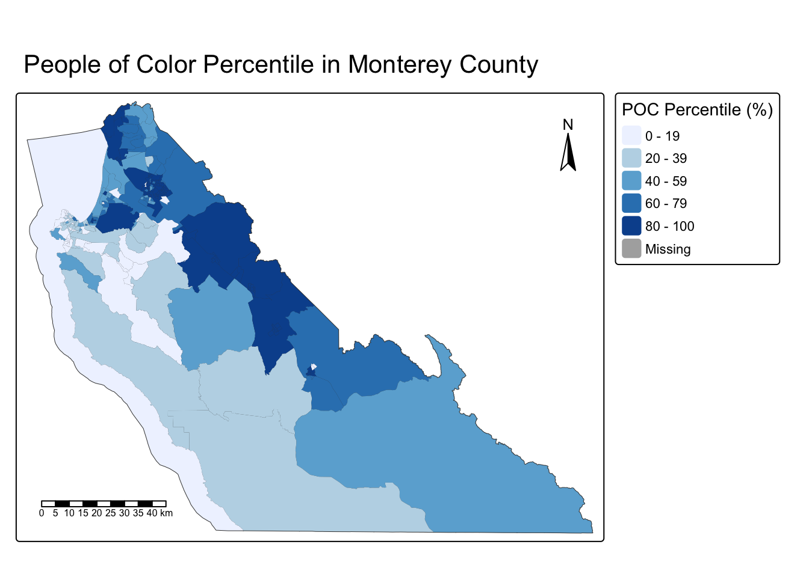

# Loading in Libraries
library(tidyverse)
library(sf)
library(here)
library(tmap)Environmental Inequalities in Monterey County: Race and Air Pollution
2025-10-21
Purpose
The purpose of this script is to create 2 maps using data downloaded from the EPA website at the block group level for Monterrey County, CA. These maps were generated using the tmap package. The first map shows the percentile for people of color rate in Monterey County. The second map shows exposure risk for toxic air pollutants in Monterey County. To investigate a possible relationship.
Reading in Data
The ejscreen data used was sourced from the EPA website. This data set contains environmental and demographic information for the US at the Census tract and block group levels. This data will be used to investigate environmental injustices.
# Read in geodatabase of EJScreen data at the Census Block Group level
ejscreen <- sf::st_read(here::here("data","EJSCREEN_2023_BG_StatePct_with_AS_CNMI_GU_VI.gdb"),
quiet = TRUE) # Add quiet = TRUE to get rid of informational outputData Cleaning
The ejscreen data frame was filtered to only contain observations from Monterey County, CA. This done to see environmental injustices occurring in this specific region. The PEOPCOLORPCT column was multiplied by 100 make the observation integers instead of decimals for better clarity when plotting.
# Filter to only include California data
california <- ejscreen %>%
dplyr::filter(ST_ABBREV == "CA")
# Filter to only include Monterey County data
monterey <- ejscreen %>%
dplyr::filter(CNTY_NAME %in% c("Monterey County"))# Turning PEOPCOLORPCT column into intergers from decimals
monterey$PEOPCOLORPCT <- monterey$PEOPCOLORPCT * 100Plotting
To investigate environmental injustices in monastery two variables were selected: PEOPCOLORPCT (People of Color Percentile) and P_RSEI_AIR (Toxic Air Pollutant Exposure Risk Percentile). These variables were plotted on separate maps to compare whether areas with a higher percentage of people of color also experience higher levels of toxic air pollutant exposure risk.
# Generating Map 1
tm_shape(monterey) + #defines spacial object to plot
tm_polygons() +
tm_fill("PEOPCOLORPCT", # % people of color
palette = "Blues",
title = "POC Percentile (%)") +
tm_title("People of Color Percentile in Monterey County") +
tm_scale_bar(position = c("left", "bottom")) +
tm_compass(position = c("right", "top"))
# Generating Map 2
tm_shape(monterey) + #defines spacial object to plot
tm_polygons() +
tm_fill("P_RSEI_AIR", # Percentile for Toxic Releases to Air
palette = "Reds",
title = "Exposure Risk Percentile (%)") +
tm_title("Toxic Air Pollutant Exposure Risk in Monterey County") +
tm_scale_bar(position = c("left", "bottom")) +
tm_compass(position = c("right", "top"))Maps Description
The maps produced display different environmental injustices occurring in Monterey County, CA. Map 1 shows the percentile for people of color. The second map shows exposure risk for toxic air pollutants. When the maps are compared you can see that there tends to be more toxic air pollutants in places that have a higher percentage of for people of color. Within Monterey County there are four point-source for air pollution According to the US EPA’s Toxic Release Inventory (TRI) (Wade, 2022). These four TRI points are Dole Fresh Vegetables Inc, Fujifilm Ultra Pure Solutions Inc, Lhoist North America Natividad Plant, and US Army Garrison Fort Hunter Liggett Ranges. The locations of these four points are where air pollutant exposure risk is the highest. Due to these regions being populated predominantly by people of color this environmental injustice has just been ignored.
Citations
- United States Environmental Protection Agency. 2015. EJSCREEN. Retrieved: 10, 06, 2025, from (https://drive.google.com/file/d/1nG6Nj1bXfzQFOVMO8Km3eNy4SWu1YcIQ/view)
- Wade, A. J. (2022, February 25). Monterey County: Racial distribution and air pollution. ArcGIS StoryMaps. https://storymaps.arcgis.com/stories/4f19c2da231b4ecb98bc43db9b85e931